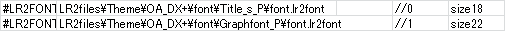
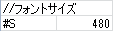
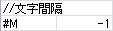
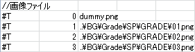
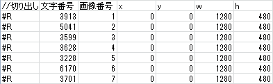
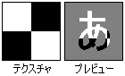

LR2でのフォントの登録
LR2スキンでは使用する画像ファイルを#IMAGEで指定しますが、これと同様に使用するフォントも#LR2FONTという定義で指定します。
この時指定するのはlr2fontファイルというLR2における文字列表示に使う専用形式で、
全文字列を画像化して格納し、それを元に本体側で各文字を参照して文字列として表示しています。
画像ファイル定義を積んでいたりxywhで各文字列を指定したりと、これ単体がスキンcsvに近い働きをします。
これによりLRemでは不可能だったグラデーションの掛かった文字列を表示したり、文字の輪郭に色を付けたりといった事が可能になりました。
lr2fontファイルが存在しない場合、もしくはLR2 SET UPオプションで画像フォントを無効にしている場合は、
#FONT定義で指定した『PCにインストール済みのフォント』が使われる、
と思わせて実際にはFONT定義のname値は認識されないのでLR2 SET UPオプションで指定したフォントが使われます。
#LR2FONT
ほぼ#IMAGE定義と同じで、指定したいlr2fontファイルの『LR2body.exeからの相対パス』を記述します。
そしてこれも#IMAGE同様、記述した順に0、1、2…と本体側から自動的に番号が割り当てられていき、この値（TEXT定義の場合はfont値）をSRC_TEXTで指定します。
パスの次を1とすると、画像フォント使用不可設定が無効になり、かならず使用されます。

この時コメントとしてfont値の他に各lr2fontの文字サイズも併記しておくと後々便利です。
関連リンク：#SRC_TEXT
#FONT
#LR2FONT定義で指定したlr2fontファイルが存在しない・#LR2FONT定義自体が存在しない、
あるいはSET UPオプションの『画像フォントを無効にする』にチェックした場合にのみ使用されます。
こちらも#LR2FONT同様、記述順に0、1、2…とfont値が割り当てられます。（#LR2FONT定義の個数とは独立してカウントされます）
フォーマットはLR2の前身であるLRemと同じになっており、PCにインストールされているフォントを使うので画像フォントと違って負荷が少なく動作も安定します。
ただ、フォントを持っていない場合は代替フォントでの表示になってしまい、表示サイズごと変わってしまう事も少なくないので
こちらをメインで使用しているLR2スキンは見た事がありません。文字間隔も指定できませんし。
実際に使ってみたところname値によるフォント指定は機能していない事が分かりました。
参照フォントはLR2 SETUPオプションで指定した『画像フォント無効時のフォント』固定のようです。
また、#FONT定義の文字列はsize値で指定したサイズでレンダリングされ、その後更に#DST_TEXTのh値に拡縮されてから表示されるので
文字サイズが異なる場合はなるべく別なFONT定義に分けた方が綺麗な表示になります。

一応各パラメータ詳細。
| size | px単位でのサイズ指定です。そのまんまです。
前述のとおり#DST_TEXTのh値に合わせた方がきれいに表示されます。 |
| thick | 太さ指定。こちらもpx単位？ |
| aa/edge |
表示文字のオプション。 0：ノーマル
|
| name |
利用できません。
※指定するのはフォントファイル名ではありません。全角/半角表記にも注意。 |
関連リンク：#SRC_TEXT
lr2fontファイルの仕様詳細
LR2起動中に一度でも読み込ませると終了させるまでプロセスでロックされ続けるため、LR2起動中の編集作業は出来ません。（画像編集は可）
また、改変箇所を反映させるにはその都度LR2を再起動する必要があります。（スキンオプションの切り替え等では反映されません）
#S

本体側に渡すフォントサイズになります。
この値からDST_TEXTのh値に拡縮を行って最終的なサイズが決まります。#M

文字間隔を指定します。単位はpx。FontUtilでは設定出来ないので基本的には手動で変更します。
#T

画像ファイル定義です。スキンcsvで言うところの#IMAGEに相当します。
画像番号（gr値相当）、ファイルパスの順で記述します。
スキンcsvとは違って「lr2fontファイルからの相対参照」で画像ファイルを指定します。
LR2body.exeからの相対参照ではないので注意。また、画像番号も宣言順の自動割り当てではないため、並べ替えや任意の値を割り当てることが出来ます。
#R

#SRC_IMAGEに近い構造です。
文字単位で画像から切り出しを行い、テキストとして表示します。
文字番号 Shift-JIS文字コードからいくつかの特殊文字を除外して生成されるLR2専用の文字コードです。
各文字番号の求め方は以下の通りです。※founfainさん情報有難うございました
- 0 〜 255
ASCIIの文字コードと同じ値- 256 〜 8126
Shift-JIS文字コードを10進数に変換して32832を引いた値- 8127 〜 15306
Shift-JIS文字コードを10進数に変換して49281を引いてた値画像番号
#Tで指定した画像番号を指定します。
xywh
スキンcsv同様、座標値を指定します。
この座標指定におけるh値が文字列の初期サイズであり、これを#S値まで拡縮して本体に渡し、
そこからDST_TEXTのh値に拡縮されるという非常にややこしい仕組みになっています。また、実際に表示される文字列の横幅は「lr2fontの#S値基準で算出されたDST_TEXTのw値」になります。
つまり DSTのh値が#S値より大きければ描画される実サイズはDSTのw値より大きくなり、#S値より小さければ実サイズも縮みます。これらの拡縮をなるべく避けるには lr2fontのh値=#S値=DST_TEXTのｈ値 になっている必要があります。
※文字列の横幅がDSTw値を超えると縮小されるので、どう足掻いても画質には限界があります。
FontUtil
lr2fontファイルとそのlr2fontに対応した各文字画像は本体付属のFontUtilというソフトで出力します。
が、ほとんどのフォントはLR2の様な「全文字データを画像として格納し、ソフト側で文字列として表示する」という利用におけるデータの配布を禁じているため、
利用できるフォントには制限があります。詳しくはこちら。
FontUtilのバッチ出力機能はこれを回避するための苦肉の策なのかなとも思いますが、
今のところバッチファイルを同封しているスキンは見たことがありません。

コンバートファイルパス
sampleフォルダに入っているSHIFT-JIS.txtを指定します。
これ以外を使うとどうなるかは未確認。マップファイル
グラデーションやテクスチャのbmpファイルを指定します。
パッと見64ｘ64固定に見えますが実際には出力するフォントサイズに合ったサイズのテクスチャが必要です。
例．64x64の白黒テクスチャをサイズ50の文字に適用した際のプレビュー

出力データ名
出力するlr2fontファイル名です。
出力後に変更可能なので深く考える必要無し。フォント情報
書体サイズ+（エッジサイズx2）がlr2fontファイルの#S値、すなわちDST_TEXTのh値になります。
拡縮を避けてより綺麗なテキストを表示するためには再出力の20〜30回は覚悟しましょう。特殊効果
ここもほとんど解説不要ですが特記事項が2点。
サンプリング数はアンチエイリアスの設定です。フォントサイズをx倍で描画した後に縮小するそうです。
数字を増やすと処理時間が増えますが、増やしても変化は徐々に微量になっていきます。
通常は2〜3で問題無いと思います。
押し出しは文字を押し出してその軌跡を表示することで立体感を出すエフェクトです。（多分）
また、押し出すことでlr2font側のh値や#S値を大きく取りつつ文字画像自体は小さく抑えることが出来るため、
「後から輪郭加工を施せるlr2フォント」を生成することも可能です。
「何に使うの？」と思った人には不要な機能と言えます。
例．S値・h値が同じで文字サイズが小さい文字画像（※どちらも大文字です）
うちではRB段位リザフォントのように「FontUtilでは作れない輪郭エフェクト」を打ち込むため、
緑色で押し出し出力しておいて、一枚ずつ押し出し部分を透過してから画像をずらし輪郭を加工していく、といった用途に使いました。
この使い方であってるのか分かりませんがあくまでも一例として。
例．黒字に輪郭グラデーションに輪郭黒エッジの文字画像
テクスチャサイズ
推奨サイズは256の倍数だそうです。
これは読み込める画像ファイル解像度の最小単位が2のべき乗である事が関係しているそうで、
例えば257ｘ257の画像を参照する際には内部的に512ｘ512を取ってしまうためとかそんなんらしいです。（詳しくは知りません）
必要な文字列が記述されている画像ファイルをその都度読みに行くため、なるべく小さい方が付加は少ない気がします。
一部機能向け識別文字
主にRBリザ・段位リザで使用した専用識別子です。
使い方は各スキンcsvとlr2font参照。
段位リザルト向け段位別背景分岐用識別子
| 文字番号 | 文字列 |
| 3913 | 初 |
| 5041 | 二 |
| 3599 | 三 |
| 3628 | 四 |
| 3228 | 五 |
| 6170 | 六 |
| 3701 | 七 |
| 5226 | 八 |
| 2979 | 九 |
| 3868 | 十 |
| 2566 | 皆 |
| 5229 | 発 |
IRメッセージ分岐用識別子
※LR2body.exeのバイナリより抜粋
| 文字番号 | 文字列 | 内容 |
| 625 | こ | この曲はIRに登録できません |
| 788 | サ | サーバーの接続に失敗しました |
| 792 | ス | スコアを送信しました |
| 4624 | 単 | 単体でプレイしたことの無い曲はIRに登録されません |
| 4664 | 遅 | 遅延率が規定値を超えたので、スコアは保存されません |
RBリザルトでは「現在サーバーメンテナンス中です」も作ってありますが、これはおそらくリザルト画面用のメッセージでは無いので省略。
- 関連リンク：
- #SRC_TEXT
- テキスト連動パーツ
- テキスト定義を用いたバーグラフ
フォントデータとDXA圧縮
拡張子がdxaになります。多分DirectXArchiveだと思います。
DireｃｔXライブラリから中身を直接参照出来る専用圧縮形式と考えて良いでしょう。
LR2files\スキン関連ドキュメント\DxaEncode.exe で圧縮、DxaDecode.exe で展開できます。
パス指定は圧縮前の状態の物がそのまま使えるので配布時にdxa圧縮するのが一般的です。
LR2では画像ファイル全般とlr2fontファイル以外はDXA圧縮しても認識できません。
通常はDXA圧縮してもファイルサイズはほとんど変わりませんが、tga形式RLE圧縮無しの場合には最高圧縮のpng形式くらいまで圧縮できます。
- ファイル数削減
- （前述のtga無圧縮の場合）画像データ読み込みの高速化
- LR2プロセスによるlr2fontのロックがDXA全体になるため、LR2で当該スキン使用中には文字列画像の編集も不可能になる（DXA展開自体出来なくなるので）
- 改変・修正時に展開・再圧縮が面倒